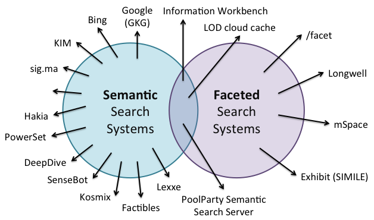

The figure below classifies a number of search systems as to whether they support semantic search and/or faceted search. A small number are at the intersection of these two including the Information Workbench that we described earlier.

Figure 49: Semantic search systems and faceted search systems.